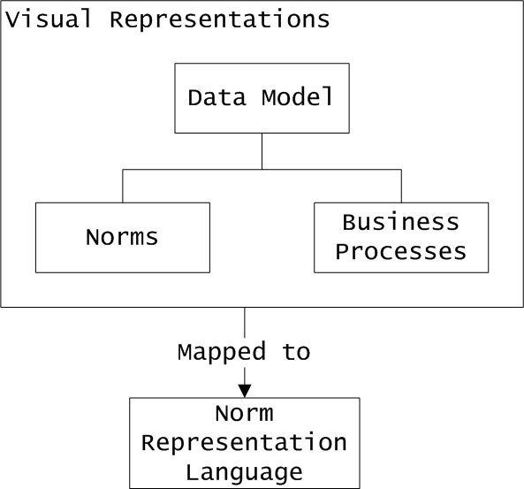

MaRCo Approach
A visual environment for modeling and checking BP compliance
MaRCo aims to provide an integrated visual environment for business process compliance modelling and checking. This environment should enable specification of business norms, business processes and for checking compliance of business processes against the norms that govern them. Norm and business process visual specification involves three components (see Figure below): the data model, the specification of norms, and the business processes.

The data model defines a common vocabulary shared by both norms and business processes. Norm specification and constraints of business processes are described in terms of the things introduced in the data model. To specify data models and norms we propose the Visual Contract Language (VCL), our visual language under development. VCL should, however, be extended to enable specification of norms in terms of deontic concepts such as permissions, prohibitions, and obligations. For business process specification, we plan to use an existing visual language. From the visual representations created by the user, the relevant definitions are extracted for the purpose of compliance checking by mapping them into a formal textual language that enables representation of norms and compliance checking.
Representation of norms
We extend existing theories of norms in three directions.
- Complex temporal constraints and reasoning, concerned also with the dynamics of norms. One example of a representation problem presently discussed in the normative systems community and relevant for the norm compliance problem is the issue of norm change. Formal models of norm change have been drawing attention since the seminal works of Alchourrón and Bulygin on normative systems, and that of Alchourrón, Gärdenfors and Makinson on the logic of theory change. In order to represent the dynamics of obligations and permissions, several deontic logics have been proposed. However, these systems did not explicitly refer to possible changes in the underlying norms - if norms were mentioned, they were assumed to be invariable. For the latest developments in areas such as the study of virtual organizations and communities, distributed environments like electronic institutions, multiagent systems, and p2p networks, the static view of norms no longer suffices. The relevance of norm dynamic to the issue of ensuring the compliance of buinsses processes is that after changes in a normative system there are no guarantees that a previously compliant process is still compliant with the new norms. In addition there are some gray cases: long lasting processes whose execution span over some changes in the norms. While some simple cases of norm dynamic can be handled by the approach by Alchourrón, Gärdenfors and Makinson, it does not handle time (in particular retroactive norm modifications). Research and practice in the legal field have identified a rich ontology of norm changes. To apply this knowledge to compliance we have to investigate formal models able to capture a large and significant corpus of norm changes, to understand the mechanisms governing these changes, and then to investigate the effects of norm changes to business processes and to develop techniques to propagate the changes from the formal model to represent compliance requirements to business processes in order to maintain their compliance. Our starting point for this would be the model of Governatori-Rotolo to represent the use of time in defeasible logic to model some types of norm dynamics, and to relate it to formal compliance checking models.
- Norms regulating what should or should not be known in an organization. Though deontic logic (the logic of norms and obligations) and epistemic logic (the logic of knowledge and beliefs) have both been developed as branches of modal logic, only recently they have been combined to express what should be known, and what is known about the obligations. We expect that these combined logics will prove useful to represent regulatory norms about business processes. For example, in risk management it is often important that the organization is aware of exceptional circumstances, such as norm violations, and thus there are norms about monitoring of processes. The challenge here is that not everything may be known, not only due to physical constraints, but in particular due to privacy concerns. Norms that forbid certain derivations about the state of individuals in an organization tend to give rise to challenging problems. The dynamic theory of normative systems will be extended with theory of dynamic epistemic logic to describe the dynamic of knowledge in organizations. There are several researchers in the ICR group (led by Prof. van der Torre) working on dynamic epistemic logic (Emil Weydert, Guilaume Aucher, Mathijs de Boer), and there is a course on dynamic epistemic logic in the academic master in computer science, such that needed expertise is locally available.
- Regulation of the documentation and explanation in business processes. Besides the theory of normative systems, another important theory in the field of artificial intelligence and law is argumentation and dialogue. This theory explains how (legal and other) arguments can be constructed, and which arguments are acceptable in a dialogue. The theory also provides an explanation why arguments are acceptable or not. In legal theory this is used to represent and reason about legal cases in a court, but we expect that it can also be used to reason about explanation in norm compliance when the theory is incorporated in the theory of normative systems. For example, for risk management exceptional circumstances must be explained by arguments, and documented. Starting point is the abstract argumentation theory of Dung, which is further developed in the ICR group by Dov Gabbay, Martin Caminada, Yining Wu, and others.
Complexity reduction
One of the challenges in checking the compliance of business processes is due to the large number of execution traces that may exist for the business process. In the worst-case this number will be at least exponential in the size of the business process. We propose four approaches for handling the complexity of compliance checking: - Impose design restrictions on the business processes: if we can identify those features in business process that lead to high complexity, we can restrict the design of the business processes in such a way that these features cannot occur. In order to do this we have to study what are the causes for the complexity (interaction between compliance requirements and the structure of a business process). We intend to study techniques to restructure the original process (or part of it) into an equivalent process (sub-process) satisfying the compliance requirements. This approach is only feasible when designing business processes from scratch since existing business process may well violate these requirements. Furthermore we need to investigate if these design restrictions give the business analyst enough flexibility to express the business requirements. If this is not the case, one of the next three approaches could be used.
- Give upper bounds on the time needed for checking compliance: for this we will need to perform a thorough analysis of how the structure of the business process influences the time complexity of compliance checking. An upper bound estimation must give the business analyst enough information to decide whether the business process needs redesigning or whether the expected time is acceptable within the current context.
- Use a tool for finding counterexamples over small search spaces: we can view the problem of compliance checking as a problem of finding a counterexample to the claim that the business process does satisfy a set of rules. This opens up the possibility of using a tool that performs checking on bounded spaces to find such a counterexample. In this context we will investigate the use of the Alloy Analyzer for expressing and checking compliance. The Alloy analyzer is a tool that checks for the existence of counterexamples by exploring a finite set of possible configurations (whose size can be influenced by the user). The alloy analyzer will find a counterexample provided that the "small scope hypothesis" holds: this hypothesis essentially states that if there is a counterexample then there is one of small size. We will investigate the set of compliance checking problems for which the small scope hypothesis can be proven: for these cases the Alloy analyzer could be used to check compliance fairly quickly.
- Another way to tackle complexity is the reuse of existing compliance checking results. The compliance checking results should be reused whenever possible. A checking is only necessary w.r.t. the additional details which have been inserted. Also, facing the problem of changing norms (as described above), existing compliance results should be reused instead of a complete re-check for compliance. The approach is based on the idea of optimization by reuse, of result propagation and compositional approaches.
Tool implementation
MaRCo proposes to build a tool to support the integrated environment for modelling and checking compliance. The following figure sketches the main graphical user interface (GUI) that we expect from this tool.
(Click on image to enlarge)
The panel to the left labelled "Rules" lists norms. Each norm has a name; by clicking one of the listed norms, the user is allowed to view and edit the norm visually or textually (if visual specification is not possible or practical). New rules can be added and existing rules can be deleted. The panel in the middle labelled "Business Process" shows business process models. It is specified in one of the existing visual notations such as BPMN or EPC, by dragging and placing the icons from the toolbar located on top of the panel. The panel to the right labelled "Data Dictionary" lists all the relevant concepts extracted from the business norms and the business process. They can be dragged and placed in the notes attached to the tasks in the business process in order to specify predicates that hold on them. Finally, the panel at the bottom displays the output. Editing the rules or/and the business process involves the execution of the compliance checking on the back stage.
Depending on the result, three types of outputs are considered:
- Compliance is displayed in green.
- An alert in red is issued when the editing introduces non-compliance. In this case, the relevant parts in both the business process and the rule list are highlighted accordingly.
- A warning in red is issued when the editing causes a potential computational complexity in compliance checking. This situation will be reported to the designer for his/her awareness. The designer can either accept the complexity and be prepared for the long duration of the compliance checking, or decide to do something to avoid the complexity. In most cases, such complexity can be avoided by simply re-writing the rules or the process business.
The proposed tool interface is a first alternative how an integrated compliance environment might look like. Further investigation is necessary to express the different kinds of norms, regulations and also to conveniently represent the compliance checking results. The user should be further supported in correcting the model or maybe even the norms to achieve the norms. The change of norms mentioned above has to be taken into consideration. Besides the graphical representation of business processes, norms and rules and their compliance there has to be a connection to the compliance technology in the background. The red alert message needs some sophisticated processing which is not directly visible in the interface. It is necessary to map the model and the regulations designed on the tool interface to a low-level compliance model. To perform compliance checking there are two ways in principal:
- a new and very specialized compliance technology is developed;
- existing formal technology is employed.
Instead of a re-development the application of existing and thus matured technology is preferred. To achieve this, different mappings from the high-level interface models to such existing low-level checking input has to be investigated. Different checking technology has to be considered (e.g. Alloy, model checking, constraint systems). Bridging this gap between business process level and lower checking level it has to be taken care that the semantic loss is controlled. Moreover, the checking results have to be mapped back to the high-level graphical representation.